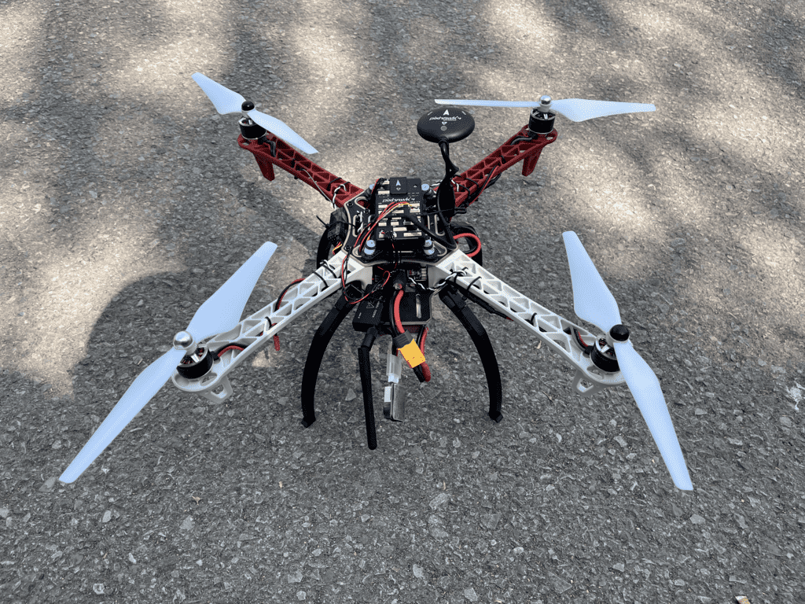
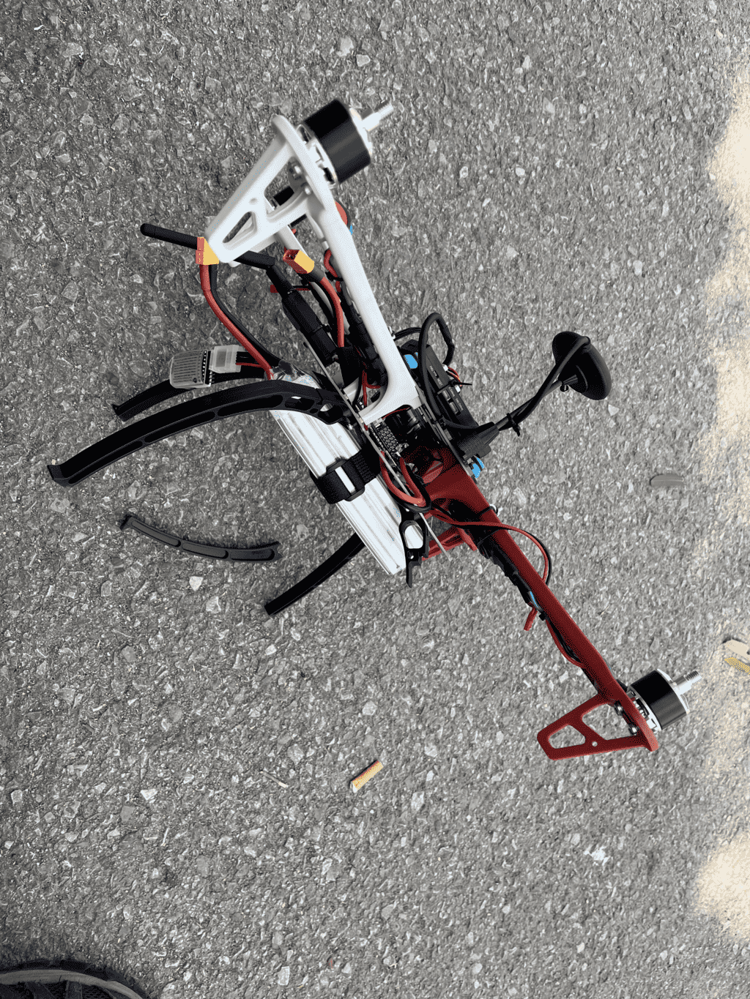

配置、调试、试飞¶
本文地面站以MP为例。
第一步 地面站的安装和启动¶
-
选择端口和波特率
-
安装固件
初始设置---安装固件 Legacy -- 加载自定义固件
第二步 设置机架类型¶
第三步 加速度校准¶
第四步 指南针校准¶
第五步 遥控设置及校准¶
遥控器设置¶
-
系统设置
-
机型设置
-
相位设置
-
辅助通道设置
-
接收机模式设置
地面站设置¶
初始设置——必要硬件——遥控器校准
第六步 飞行模式设置¶
初始设置->必要硬件->飞行模式
第七步 飞控的解锁与上锁¶
第八步 失控保护设置¶
使用最多的失控保护有:油门失控保护和低电压失控保护(需电流计)。
设置油门失控保护¶
遥控器设置¶
地面站设置¶
初始设置--必选硬件--故障保护
第九步 电流计设置与使用¶
初始设置->可选硬件->电池监测器
第十步 整理绑扎，安装桨叶及试飞¶
第一次去公园试飞，由于没控制好，摔下来摔断了一根腿


用强力胶粘好后，在小区内成功试飞